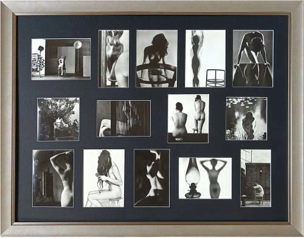
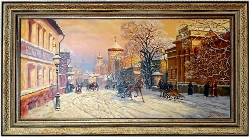
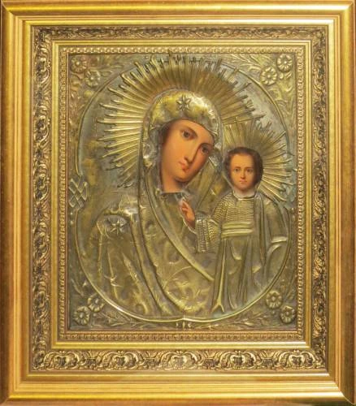
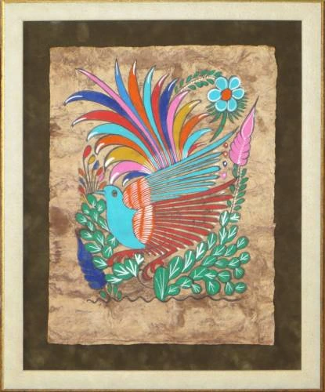

Вышивка
Крест, гладь, бисер и ленты. Для примерки измерьте ширину и высоту той части работы, которую хотите видеть в окне.
Работы в каталогеОт вышивки и графики до коллекционных предметов. Семь направлений из портфолио Bagetbat.

Крест, гладь, бисер и ленты. Для примерки измерьте ширину и высоту той части работы, которую хотите видеть в окне.
Работы в каталоге
Для объёмных предметов и коллекций мастерская изготавливает витрины. Глубину предмета можно указать в примечании к спецификации.
Работы в каталоге
Для бумаги мастерская предлагает оформление под стекло с задником. В портфолио также есть постеры и открытки.
Работы в каталоге
В мастерской оформляют живопись, акварель и работы по номерам. Каталог показывает разные формы и ширины профиля.
Работы в каталоге

Профиль может стать обрамлением крышки и стенками шкатулки. В портфолио собраны формы и отделки.
Работы в каталогеМастерская также оформляет зеркала, гобелены, алмазную мозаику и раскраски по номерам.
О мастерскойДля фотографий, рисунков и документов в мастерской есть комплект из рамы, стекла и задника. В официальном конструкторе выбирают вид стекла и задник. Указанный там срок изготовления — от 7 до 14 рабочих дней.